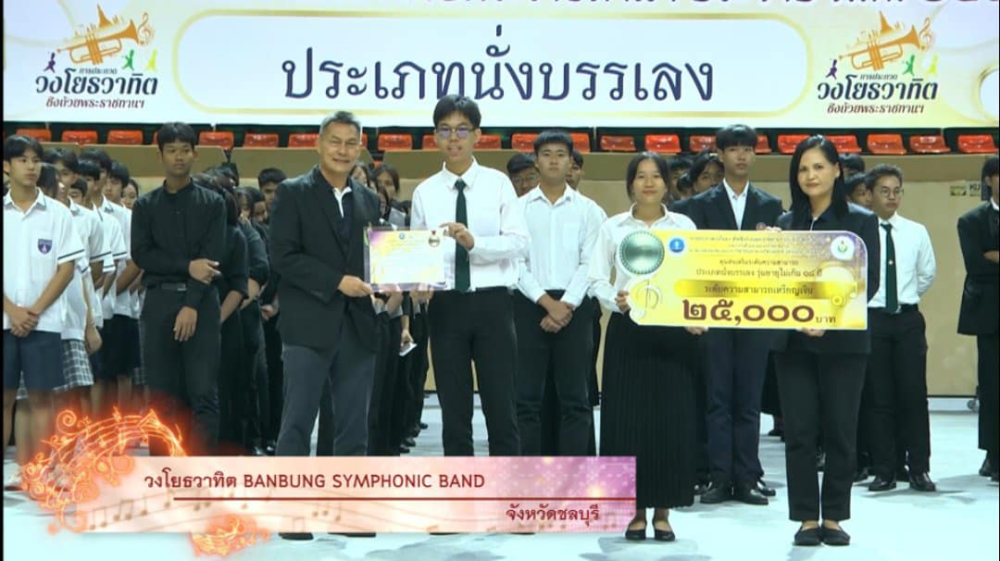
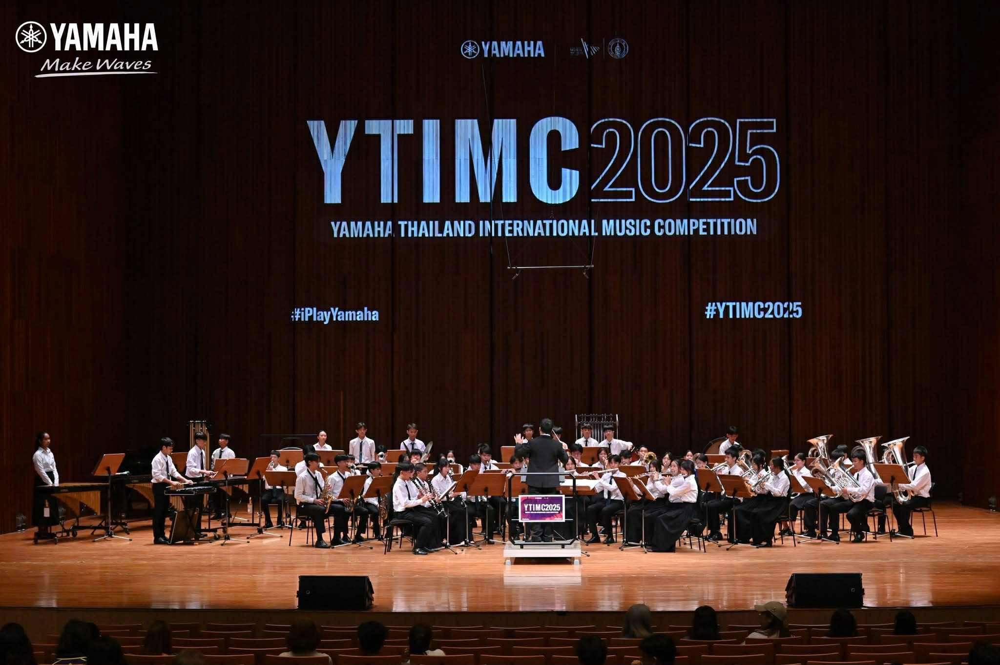
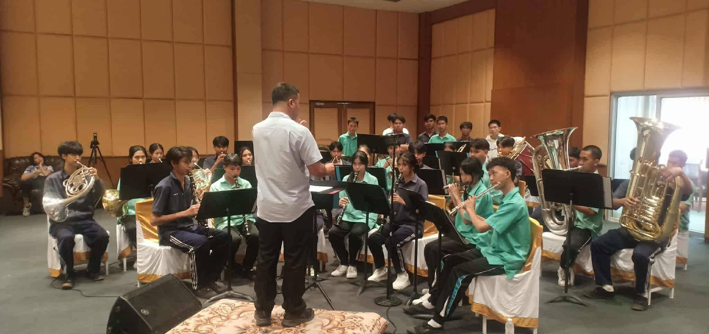
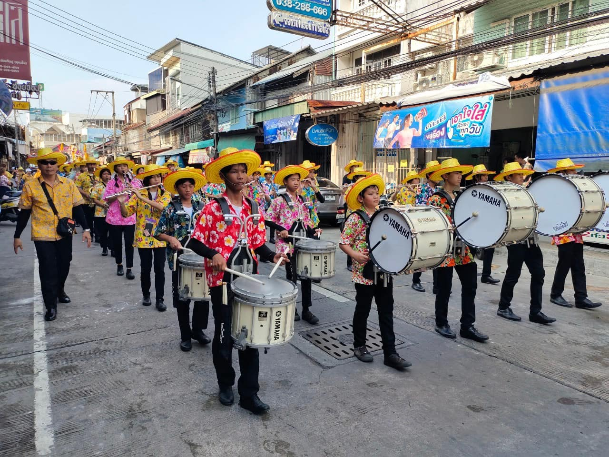
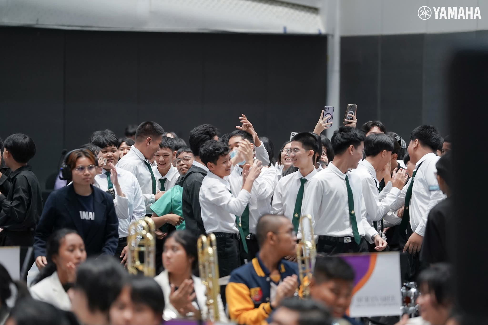

04
PORTFOLIO
เกียรติบัตรและรางวัลจากการประกวดวงโยธวาทิตและวงดุริยางค์ ที่สะสมมาจากการฝึกซ้อมและการแข่งขันร่วมกับวง Banbung Symphonic Band
GOLD MEDAL

01 / INTERNATIONAL
International Virtual Contest 2025
Music & Marching Arts International — รางวัล Gold Medal ระดับ Proficiency ร่วมกับ Banbung Symphonic Band
SILVER MEDAL

02 / NATIONAL
วงโยธวาทิตชิงถ้วยพระราชทาน ประจำปี 2564
กรมพลศึกษา กระทรวงการท่องเที่ยวและกีฬา — รางวัลระดับเหรียญเงิน ประเภทนั่งบรรเลง รุ่นอายุไม่เกิน 18 ปี

พิธีมอบรางวัล — วงโยธวาทิต BANBUNG SYMPHONIC BAND
MOMENTS ON STAGE

YTIMC 2025 — การประกวดวงดุริยางค์เครื่องลมระดับนานาชาติ ณ Prince Mahidol Hall ม.มหิดล ศาลายา · 7 พ.ค. 2568
ค่ายเยาวชนพหุปัญญา Soft Power ครั้งที่ 3 ด้านดนตรีสากล ปี 2568 — ตัวแทนภาคกลางและภาคตะวันออก ณ ร.ร.ชลราษฎรอำรุง จ.ชลบุรี · 27–28 ก.ย. 2568
ขบวนพาเหรดงานสงกรานต์เมืองชลบุรี ประจำปี 2567
“จังหวะไม่ใช่แค่การนับเวลา
แต่มันคือสิ่งที่ทำให้เพลงเดินไปข้างหน้า”
แต่มันคือสิ่งที่ทำให้เพลงเดินไปข้างหน้า”